Outdoor Christmas decor fails for dull reasons. The wind takes it, the rain ruins it, or it looks fine from the step and vanishes from the curb.
None of that is a design problem. It comes down to fastening things properly, choosing the right size, and putting every string of lights on a timer.
These 22 ideas cover doors, rails, planters, lights and yard displays, each with the fastening, spacing or safety detail that keeps it standing until January. Read the five rules first, because they apply to every one.
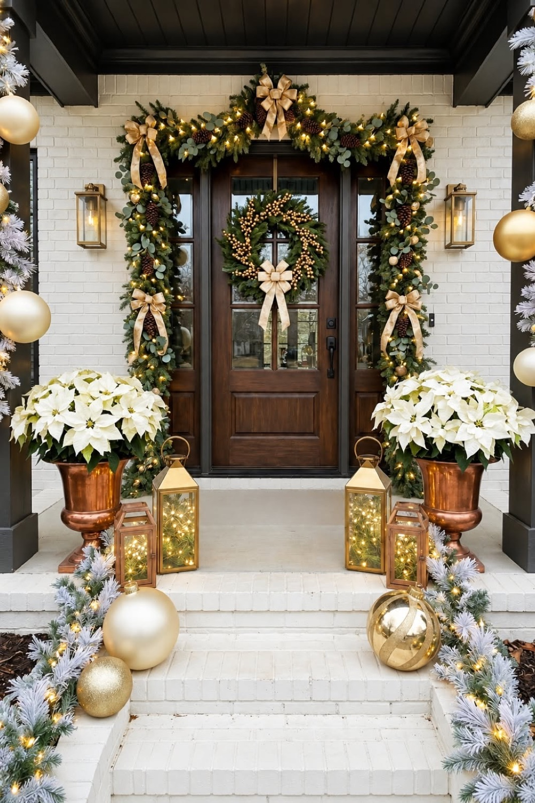
Five Rules for Outdoor Decor That Survives the Weather
- Buy outdoor-rated lights and cords only. Indoor strings fail in damp, and a plug lying in a puddle is a shock risk. Plug into a ground-fault (GFCI) outlet or a GFCI adapter.
- Fasten with wire and screws, not tape. Floral wire, zip ties and screw-in cup hooks hold through wind. Tape and adhesive hooks let go on the first cold, damp night.
- Put every string on a timer. Set it to start at dusk and run about six hours. The display looks the same every evening and nothing burns all night.
- Size up for the street. Outdoor decor is read from the curb, not from the step. A wreath under two feet across looks lost on a standard door.
- Pick one ribbon and use it everywhere. The same red bow on the door, the rail and the window box makes a busy porch look planned instead of piled up.
Doors and Entry Steps
1. Make Two Garlands Match and the Door Looks Framed
Matching is the whole trick. Two garlands of the same length, one on each side of the door, turn a plain entry into a frame, as these red-berry garlands do around a black door.
Measure the trim first and buy two lengths that reach about two thirds of the way down. Hang them on screw-in cup hooks set into the wood trim, because tape slides off cold brick.
The poinsettias in the corners and the red doormat pick up the berries, so three things repeat one color. Real poinsettias die in a freeze, so use faux ones outside or bring live ones in at night.
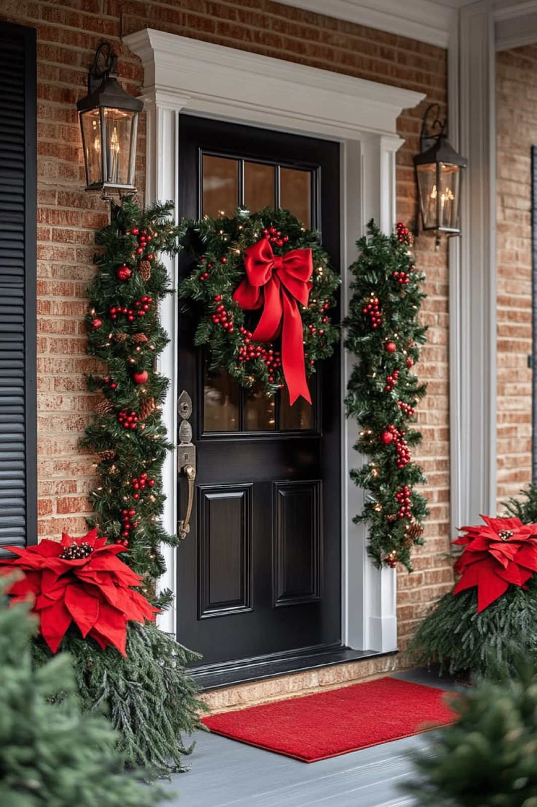
2. Stack the Stoop in Three Heights
A stoop never feels crowded when the decor sits at three heights: a wreath at eye level, a tree at waist height, gifts on the floor. This wood door does it with a berry wreath, a lit tree in a basket and a pile of red and kraft boxes.
Stuff the boxes with crumpled paper and wrap lid and base separately, or leave them empty. Real gifts on a porch invite theft, and rain ruins the paper. Set a brick in the bottom of the basket so a gust cannot tip the tree.
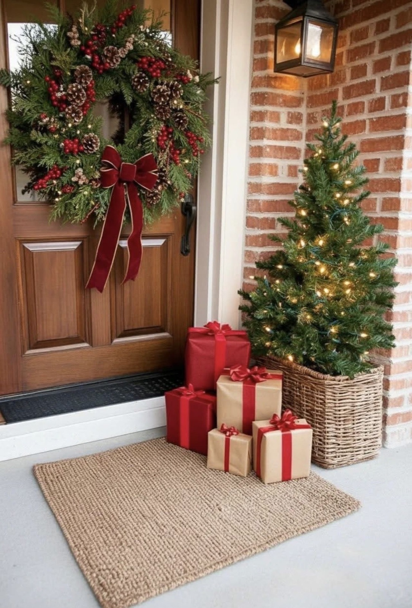
3. Keep a Formal House to Two Colors and One Metal
Is the house formal? Then the decor should be too. Two colors plus greenery is the formal formula, and the metal should match your door hardware and fixtures.
Here gold ribbon, gold ornaments and gold lanterns share one warm tone, with copper urns as the only change. Cream poinsettias keep the palette quiet.
A garland that runs up one side, over the top and down the other needs help at the corners. Wire it to the trim every two feet so wind cannot lift the middle.
Choose warm white LEDs for the strand inside the garland. Cool white turns gold to gray.

4. Use Ornaments Big Enough to Read From the Street
Scale is where outdoor decor usually fails. A bauble the size of a grapefruit vanishes at ten feet. One the size of a beach ball is visible from the sidewalk.
These three oversized ornaments, roughly two feet across, differ in size and pattern but share a palette of red, cream and green. That mix reads as collected, not bought in a set.
Cluster them against the wall, where the wind has less to push. Stake inflatables to the ground and put a brick or a scoop of sand in the base of hard plastic ones.
Check that the label says outdoor. Indoor plastic fades and cracks in a season of sun and frost.
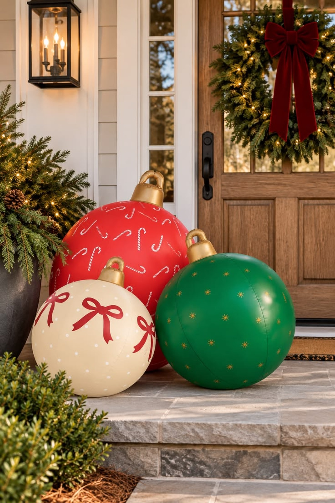
5. Buy Height With a Stool
A stool lifts a small tree to waist height in an entry too shallow for a floor tree. Keep it lower than the door handle so the door still opens, as this white stool does with a lit tree in a pail and a lantern at its feet.
Run the cord along the wall behind the stool and press it flat under an outdoor cord cover. A loose cord across a doormat is a trip hazard, and the lantern should hold a battery candle, never a flame.
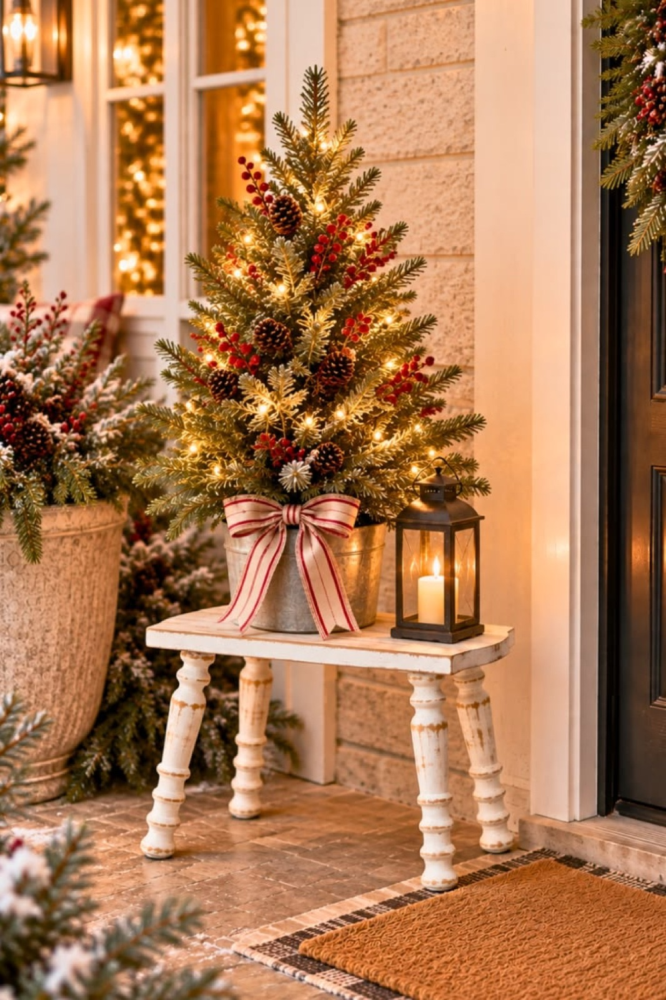
6. Lean a Sled and Let It Do the Work
A sled is the cheapest porch prop around, and thrift stores and flea markets often have them. Lean it at a slight angle against the wall so it cannot slide.
On this porch the red runners and a loose bow of greens add a color accent beside a black door, with a flocked tree filling the space on the other side.
Flocked trees belong under a roof. Rain and wet snow wash the flocking onto the step, so on an open porch choose an unflocked tree in a heavy pot.
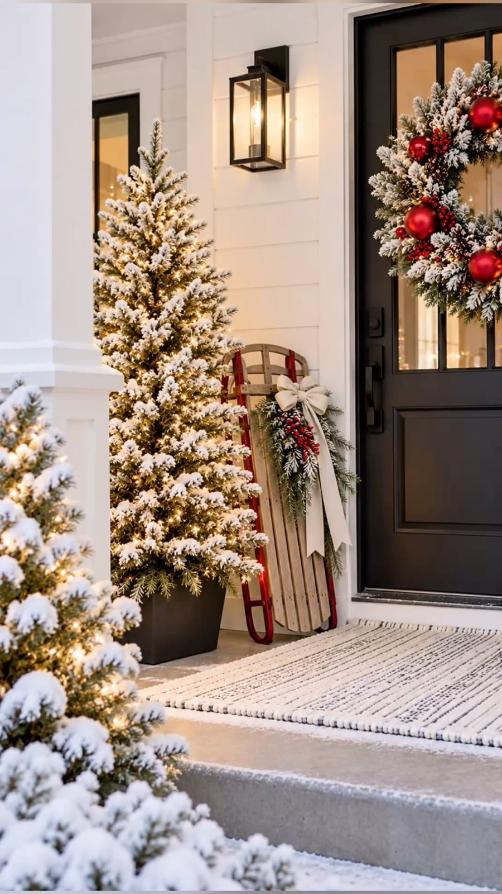
Rails, Stairs and Rooflines
7. Hang Rail Garland in Swags, Not a Straight Tube
Let the garland dip between the posts and pin it up at each post. Swags catch the eye, and a straight tube just looks like a hose. This white rail has deep dips with a red bow at every post.
Measure the rail in feet and buy garland to match, plus about a foot extra for the dip. Use zip ties in the color of the rail so they vanish.
Velvet bows look rich but soak up rain. They survive here because the rail sits under a porch roof. On an open rail, choose wired outdoor ribbon about four inches wide, which keeps its loops in damp air.
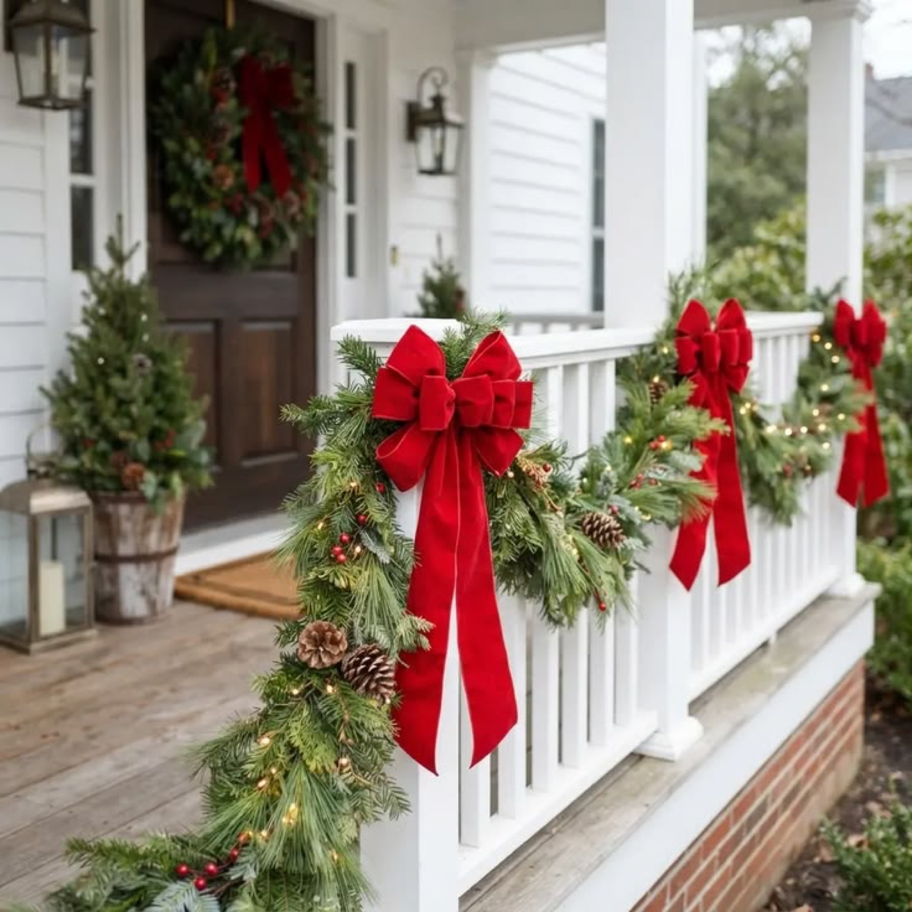
8. Light the Garland Before You Hang It
Weave the lights through the greenery while it lies on the ground, where gaps are easy to see. Hanging a bare garland and adding lights on a ladder is the slow way.
Point the plug end toward the outlet before you lift it. A cord stretched across the porch to reach a socket is a trip hazard.
Choose LED strings, which run cool and let you join more strings on one cord. The box states the maximum number to connect.
Wrap the rail only, as here, and keep the treads clear. Garland that hangs over a stair edge catches feet.
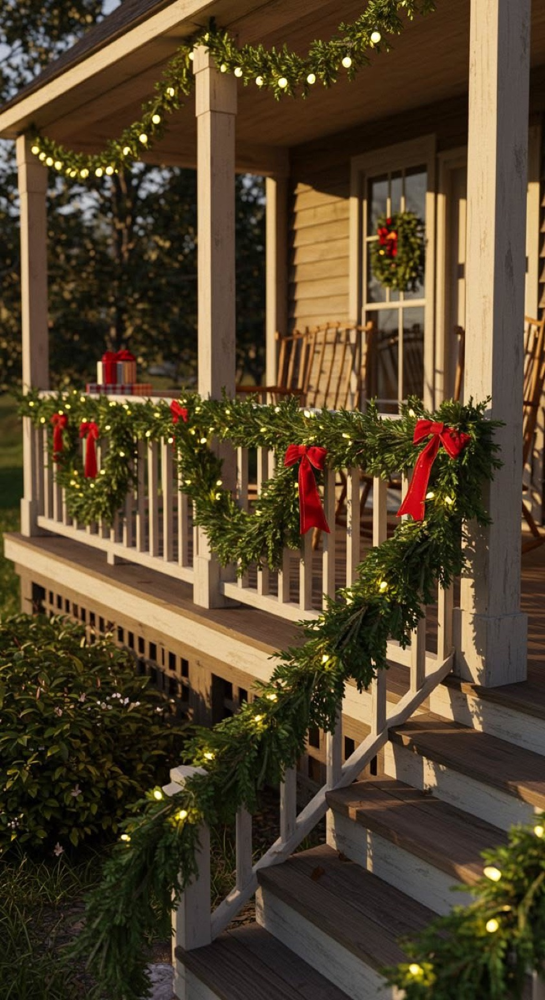
9. Keep Stair Decor on the Rails
Steps are for walking first. Decor goes on the railings and at the edge of the landing, never in the middle of the treads. These snowy brick steps follow the iron rails with garland, red ribbon and gold ornaments.
Salt or sand the treads before the first snowfall, and keep ribbon tails short so they cannot snag a coat or a leash.
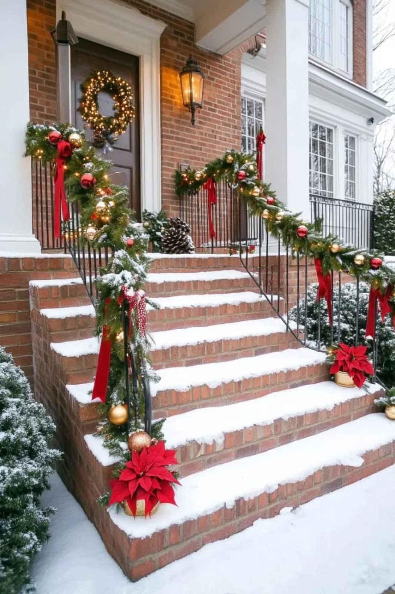
10. Clip the Roofline, Do Not Nail It
Clips made for your gutter or shingle type hold a strand against the roof edge and take no tools to remove. Nails split shingles and leave holes. This roofline is outlined in warm white along both gables.
Plug the glowing deer into a ground-fault (GFCI) outlet and stake each one down. A lit deer that falls in a gust is a hazard as well as an eyesore.
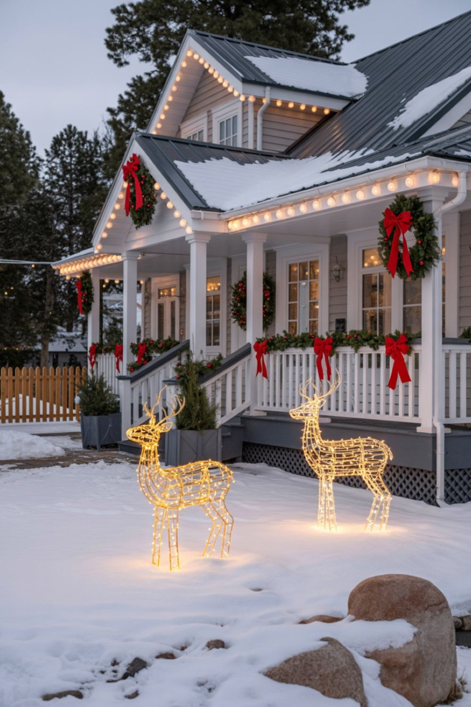
Planters and Window Boxes
11. Overfill the Planter
A planter looks full or it looks sad, and half-full is sad. Build in layers: greens first, berry picks next, ornaments last, as in this black pot where the stems spill over the rim.
Faux stems pushed into floral foam shrug off a freeze. Real greens last longest in cold, damp soil and turn brown during a warm spell.
Wire ornaments to the stems with floral wire and keep to shatterproof ones. Glass and wind do not mix.
Make sure the pot has a drainage hole. Without one, rain turns the soil to mud, and freezing water can crack the pot.
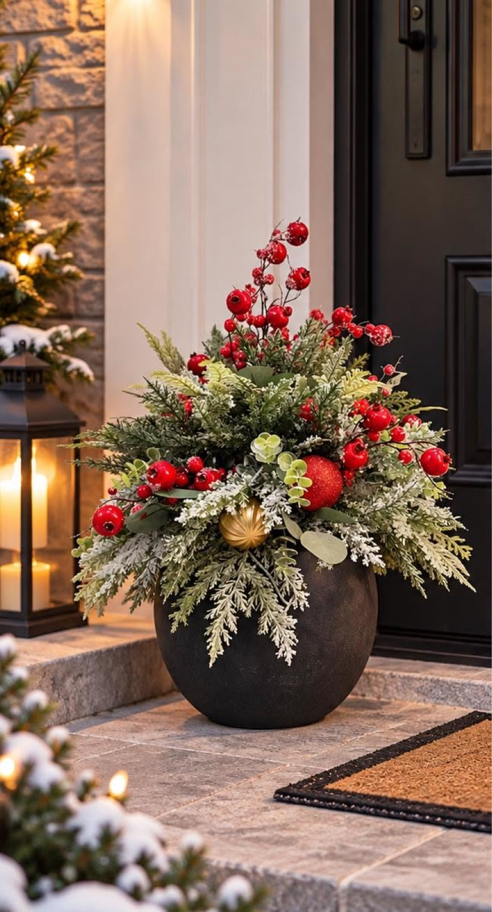
12. Buy Height in Twigs
Tall branches are the cheapest way to give a planter a spine. Cut red dogwood or winterberry two to three times taller than the pot, and the arrangement stands up straight.
Mix at least three kinds of greens with different needle shapes. This gray bowl holds soft cedar, blue-gray fir and darker pine, and the variety looks natural where a single kind looks like a clipped hedge.
Soak the soil on a cold day and the stems freeze in place, which holds them better than any wedge.
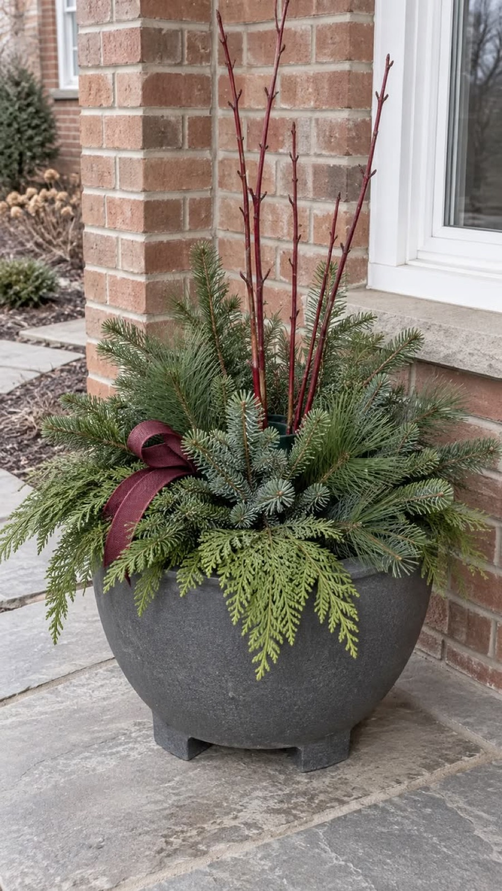
13. Decorate the Window Like the Door
Windows are part of the facade, so give them the same attention as the door. One wreath over one window box ties the whole front together.
On this white house, the wreath hangs from a loop of red ribbon over the top of the sash, and the box below repeats the same greens with red ornaments.
Skip suction hooks, which lose their grip in the cold. A ribbon loop over the top of the sash or a wreath hanger that hooks the frame holds all season.
If the box faces afternoon sun, use faux greens. Real ones dry out quickly against warm glass.
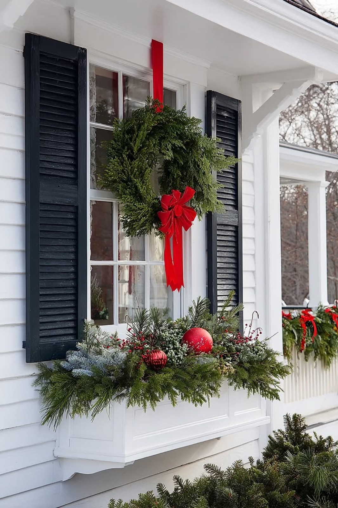
14. Reuse the Summer Window Box
Do not toss the summer box. The soil is already in it. Pull the dead plants and push cut greens and berry branches straight in, as in this dark green box.
Push the stems about six inches deep and pack them tight so nothing leans. Put the longest branches at the back.
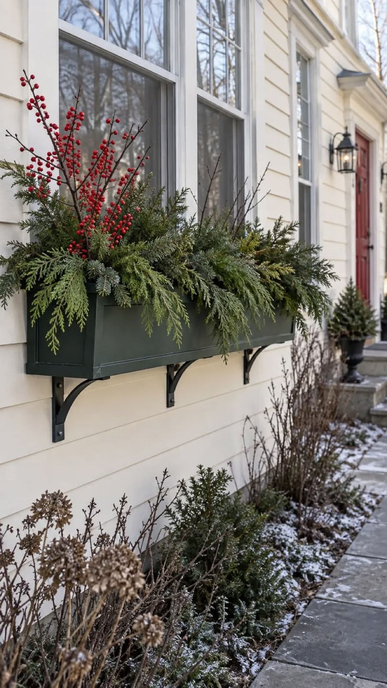
Lanterns, Path Lights and Wrapped Trees
15. Let Lanterns Carry Light, Height and Greens
A lantern does three jobs at once: it holds light, adds height and gives you a place to tuck greens. These two black ones hold candles, pinecones and sprigs of pine.
Use battery candles with a built-in timer. Real flames blow out in wind, and an open flame next to dry greens is a fire risk.
Fill the bottom third with pinecones and sprigs so the base looks full and the candle sits straight. Two lanterns in different heights look better than a matching pair.
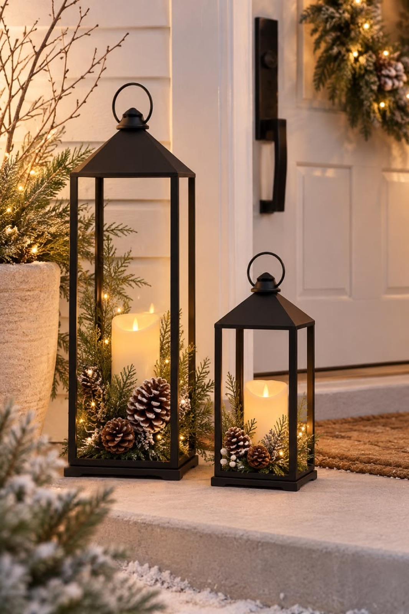
16. Light the Path for Safety First
Path lights are decor and safety in one. Space the stakes about three feet apart so no stretch of the walk goes dark, as with these spiral trees along a stone path.
Solar stakes need open sun all day and fade early on short December days. Wired ones stay bright. Push the stakes in before the ground freezes hard.
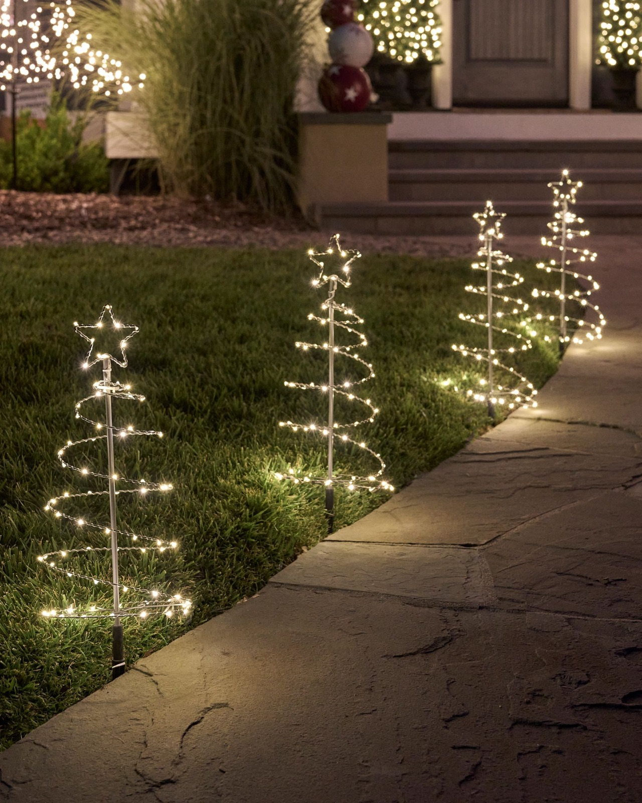
17. Use Net Lights on Round Shrubs
Net lights are the fast way to light a round shrub. Drape the net over the top, tug it even, and they come off in minutes in January.
Measure the shrub across before you buy, and choose a net that covers it with a few inches to spare. A net stretched tight pulls the branches out of shape.
Keep the plug and every connection off the ground and out of snow, wrapped in a weatherproof cover. Test the net before it goes on, since a dead section is easy to swap on the lawn.
Match the bulb color to the house. The warm white here picks up the lit windows behind the shrubs.
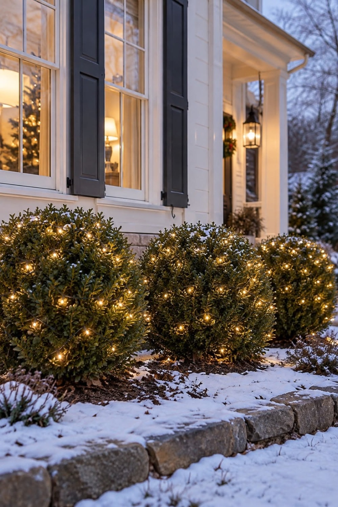
18. Wrap Tight or Not at All
A wrapped tree is the biggest effect for the least decor, and it takes more strands than you expect. Buy one more box than you think you need. Spacing the turns about four inches apart gives a full glow, as on these bare trees.
Start at the base, spiral upward and tuck the plug end low. Add a zip tie every foot or so, because wind unwinds a loose wrap overnight.
Take the lights down by late January. Wire left on a growing branch bites into the bark.

Yard Displays and Outdoor Rooms
19. Repeat One Shape Down the Drive
Repetition is what makes a driveway look festive. One shape at an even spacing reads from the street, as this row of lit candy canes does along a snowy edge.
Choose canes at least 24 inches tall so a snowfall does not bury them, and space them about four feet apart.
Push the stakes in before the ground freezes. Plug the whole row into one outdoor cord on a timer.
End the row at the house or a tree. A line that stops at nothing looks unfinished.
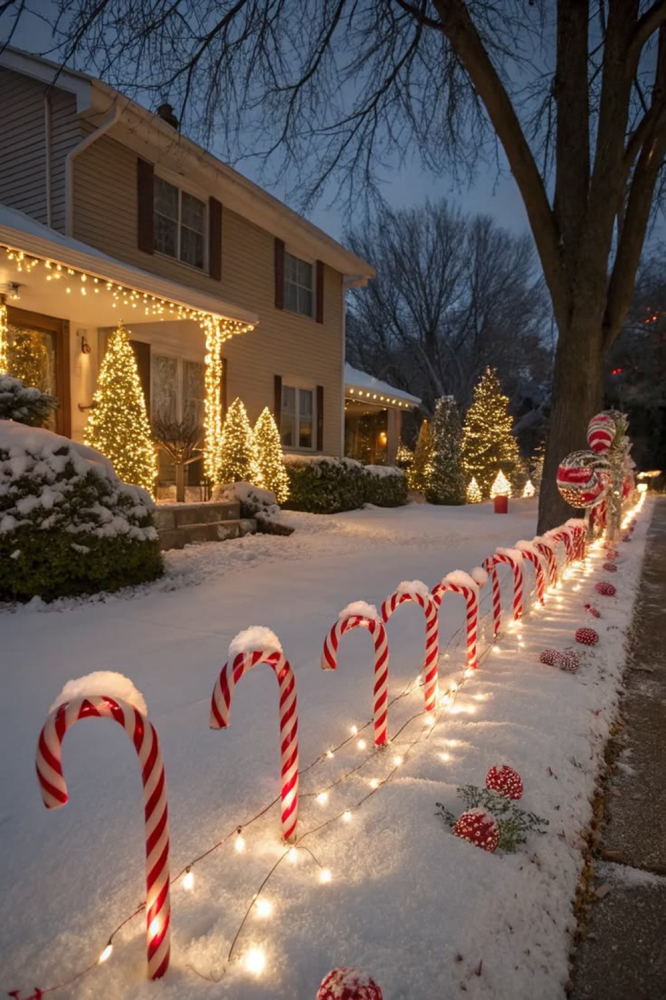
20. Build the Reindeer Yourself
A homemade yard display costs a fraction of a store-bought one. Cut the shapes from exterior-grade plywood about half an inch thick, seal the edges, then paint with exterior white.
Screw a stake to the back of each piece, not staples, and wrap battery fairy lights around the antlers and body, as on these leaping deer.
Three at different jump heights read as a herd. Two look like a pair.
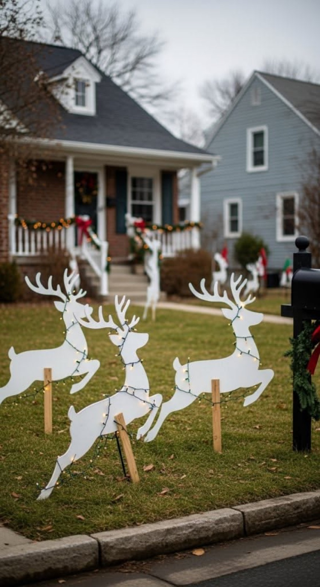
21. Anchor a Full Tree on the Patio
A full tree can live outside if it is an outdoor-rated artificial one. Anchor the base with sandbags or pavers in the stand, since wind tips an unanchored tree fast.
Hang the ornaments on wire loops, not hooks, and stay with shatterproof balls, as these red and gold ones are. Leave family heirlooms inside.
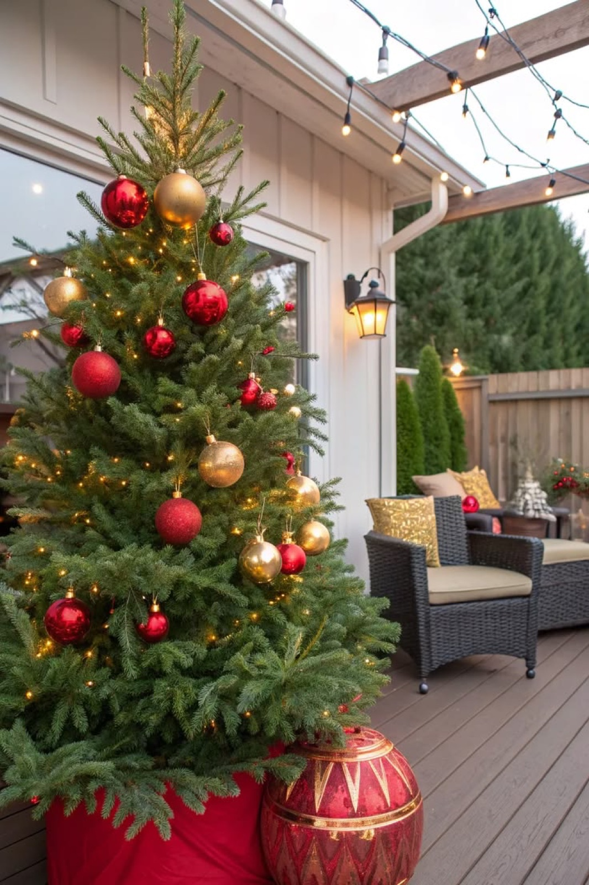
22. Make the Patio Warm Enough to Sit In
Patio decor only counts if people use the patio. Put a basket of throws within arm's reach, like the woven one here with plaid and green blankets, and guests stay longer.
The centerpiece should be a lantern of battery candles set in greens, not real flames. Throws and open fire do not mix.
Warm string lights overhead and red pillows on the sofa tie the room to the rest of the house.
If you add an outdoor heater, read the label for ceiling clearance before you buy. A low roof rules most of them out.
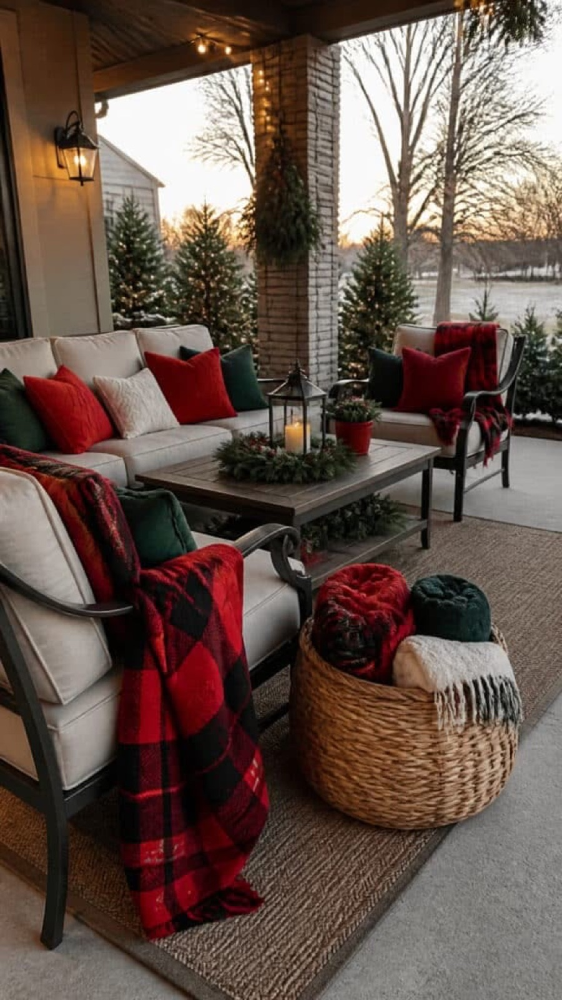
Common Mistakes (and Fixes)
- Mistake: using an indoor extension cord outside. Fix: choose outdoor-rated cords, wrap each join in a weatherproof cover and raise it off the ground.
- Mistake: too many strings on one outlet. Fix: check the wattage or the maximum-connection number on the box. LEDs let you join far more strings.
- Mistake: hanging heavy garland on adhesive hooks. Fix: use screw-in cup hooks or wire around the rail posts.
- Mistake: decor too small for the distance. Fix: walk to the curb and look back. If you cannot read it from there, size up.
- Mistake: leaving everything up until spring. Fix: take the lights down by late January. Ice, sun and wire left on branches wear them out.
Where to Start
You do not need all 22. Dress the door first, add one lit feature on the rail or in the yard, and stop there.
Plug in each strand while it is still on the ground, because a dead section is easy to swap there and miserable on a ladder. Set the timers once and the display runs itself until the new year.